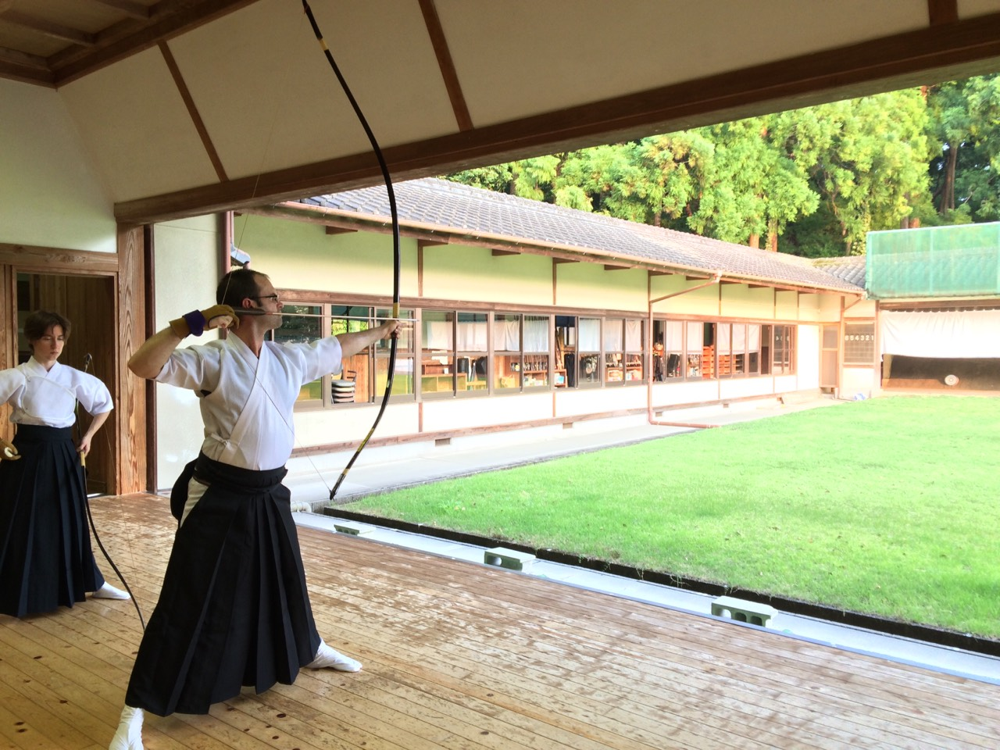

Who is Andrew Devitt?
I live and work in Brisbane, Australia, where I’m beginning my journey into web development as a full-stack developer.
Education and work history
I have always had an interest in computing, graduating originally from university with a Bachelor of Information Technology with streams in Systems Administration and Software Engineering.
Another passion has been languages – in particular Japanese. After university, I began a career in English education, and I lived and worked for 10 years in Japan. I have a Masters in Linguistics, English teaching credentials, and almost 20 years of teaching experience.
Hobbies and interests
My hobbies and interests include martial arts, swimming and scuba diving, board games, and photography.
I have studied and hold dan-rankings in taekwando, aikido and kyudo (Japanese archery), and have studied various other martial arts over the years. When in Japan, I enjoy participating in kyudo competitions and events as a part of the community.